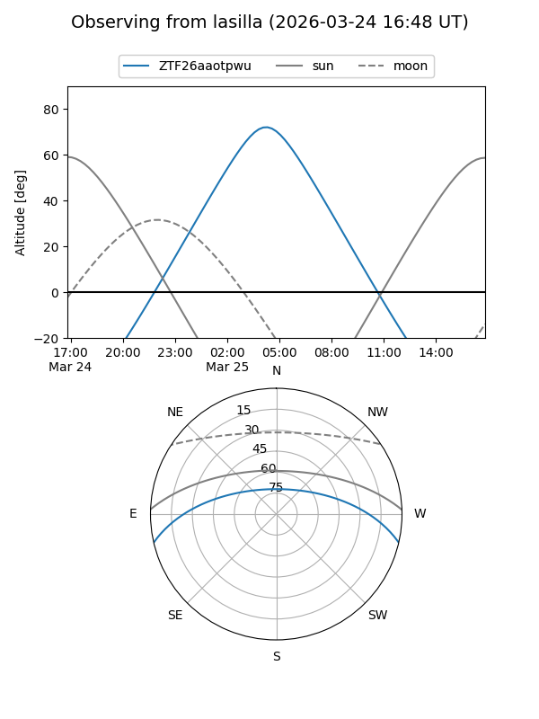
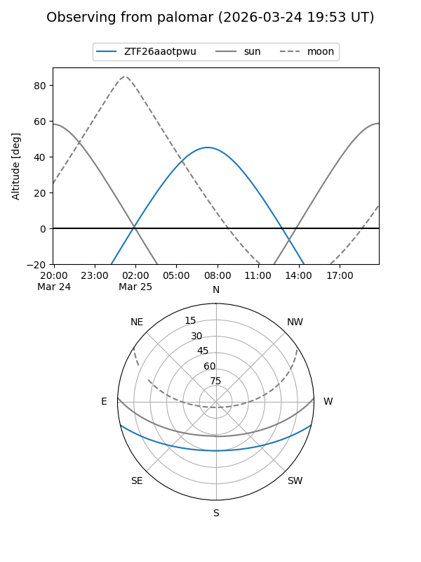

ZTF26aaotpwu
Target ZTF26aaotpwu at 2026-03-25 08:42
Aliases and brokers:
FINK: link
Lasair: link
ALeRCE: link
alt names
ZTF26aaotpwu (ztf,fink_ztf)
Coordinates:
equatorial (ra, dec) = 175.0403,-11.24828
equatorial (HMS+DMS) = 11:40:09.67,-11:14:53.80
galactic (l, b) = (276.3325,+47.90827)
Flags:
Photometry:
last ztfg=15.77, ztfr=15.24
1 ztfg, 1 ztfr detections
Lightcurve
Visibility


Additional plots